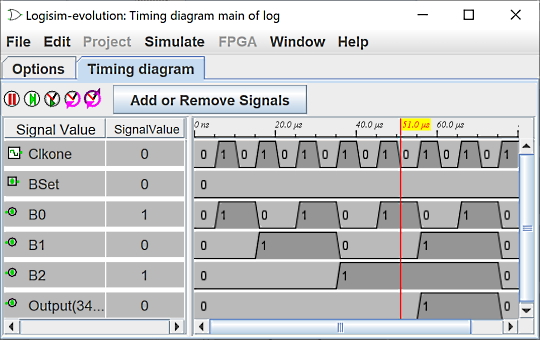

计时码表
小节：
信号选择
计时器窗口
为了理解或调试电路，能够以视觉方式观察不同的信号通常非常有用。 这就是时间线的目的。 该模块允许以图形形式或文本文件中的值表记录信号。

您可以通过菜单| Simulate |→| Chronogram |进入日志记录模块。 它会弹出信号选择窗口。
下面的电路是定时模块的说明性示例。

这些时钟用作显示信号的驱动器。 模拟知道两个特定的时钟。 一个是命令式的，名为sysclk，另一个是可选的，名为clk，是辅助的。
注意：电路中必须有一个名为sysclk的时钟。 它将被计时模块用作时基。 它不必连接到您的电路。 原则上它是最快的，占空比设置为 1/1 tic。
下一步： 选择选项卡